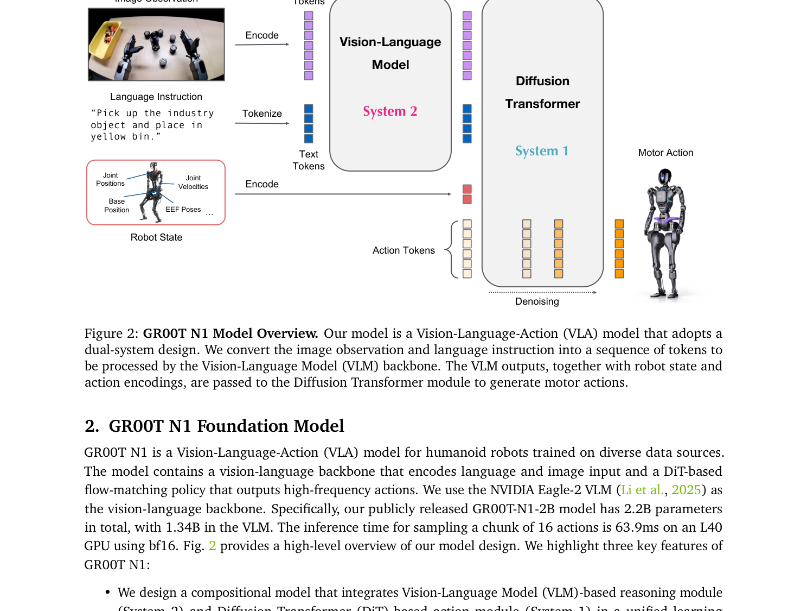
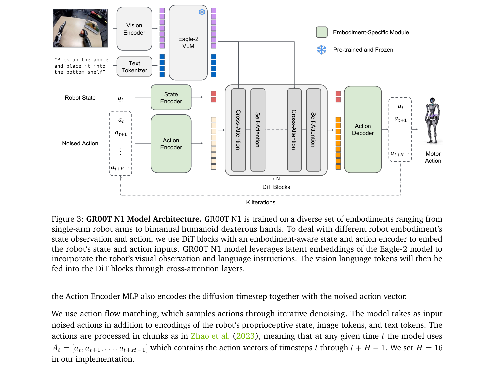
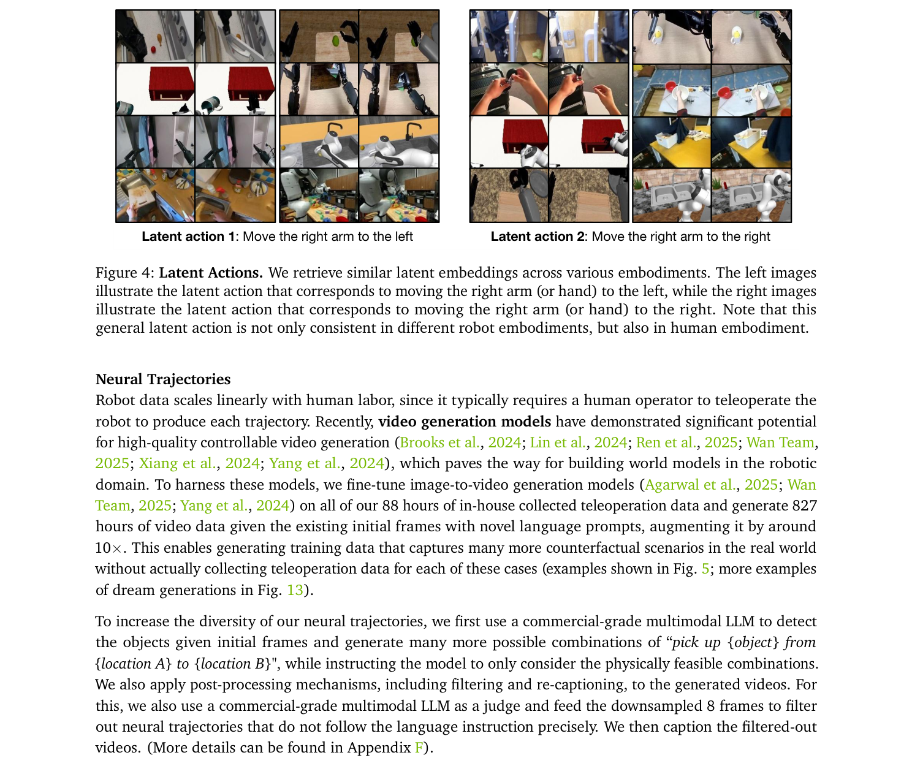
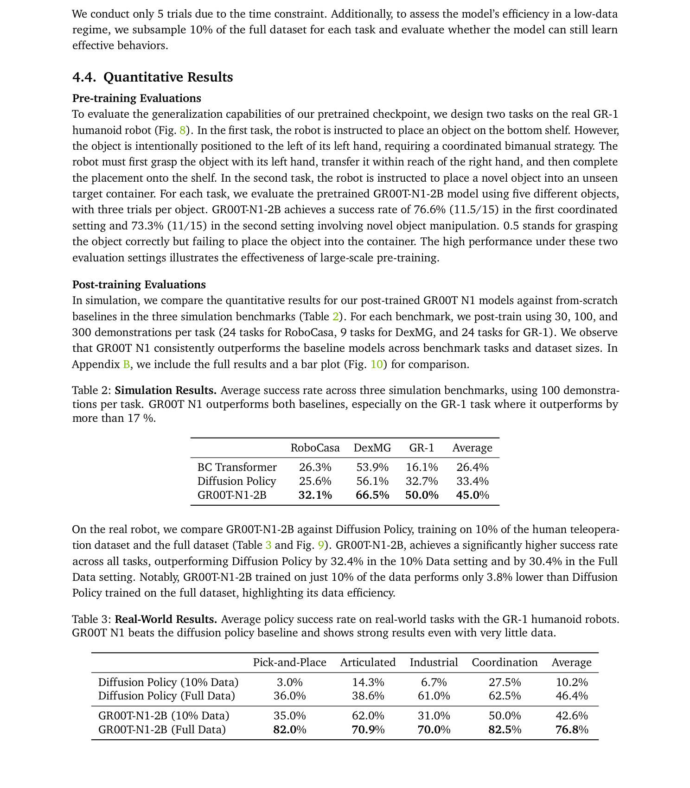

💡速记层 · 思想 / 逻辑 / 方法
默认读完就走的一层——只讲思想、逻辑、方法；效果只作验证。要核对原文/钻细节再看下面的「深读层」。
- 人形机器人数据极稀缺，单体机器人数据量级远低于 VLA 所需——形成「数据孤岛」问题。
- 但网络视频和仿真轨迹规模大，关键在于如何把它们转化成可学习的动作标签：VQ-VAE latent action（无监督）+ IDM 伪标签（监督）解决这一问题。
- 视频生成模型可以从少量真机演示出发，生成大量反事实神经轨迹，实现 10× 数据扩增。
- Dual-system 架构：VLM（System 2）以 10Hz 做场景推理，DiT（System 1）以 120Hz 生成流畅动作——推理与执行频率解耦，通过 cross-attention 耦合。
- embodiment-specific 的 encoder/decoder + 共享 DiT backbone → 一套权重覆盖单臂/双臂/人形多种机器体，后训练仅需微调 adapter 层。
在三个仿真基准全面超越 BC-Transformer 与 Diffusion Policy；真机 GR-1 任务平均成功率 76.8%，仅 10% 数据时仍比 Diffusion Policy 全量高 3.8 个百分点——证明了预训练带来的数据效率。神经轨迹 co-training 在 RoboCasa 贡献 +4~9% 额外提升。
想看具体数字（点开）
- 仿真平均成功率：GR00T-N1-2B 45.0% vs Diffusion Policy 33.4%（100 demos/task）
- GR-1 任务：50.0% vs 32.7%（+17%以上）
- 真机全量数据：76.8% vs 46.4%（+30.4%）
- 真机10%数据：42.6% vs 10.2%（+32.4%）
- 预训练零样本：76.6%（双手协调）/ 73.3%（新物体/新容器）
- 仿真轨迹生成：78万条，11小时完成（DexMimicGen）
- 神经轨迹生成：~30万条（827小时），~10.5万 L40 GPU 小时
Track A（人形/移动操作 VLA）直接命中：这是 NVIDIA 官方的人形 VLA 基础模型，双系统架构、数据金字塔策略、latent action/IDM 无动作数据利用、视频生成扩增——每一项都是 VLA 研究的核心范式参考。Track B（足式先进算法）部分相关：GR00T N1 专注 manipulation 而非 locomotion，但其数据生成策略（仿真 + 神经轨迹）和 co-training 思路在足式策略上有迁移价值。按框架深读，证据细节见下。
◆核心观点 · 证据
每条 = 中文论点 + 📍页/节 + 🔤逐字原文(Ctrl-F 锚点) + 🀄译文 + 💡解读。
the great variability in robot embodiments, sensors, actuator degrees of freedom, control modes, and other factors result in an archipelago of "data islands" rather than a coherent, Internet-scale dataset needed for training a true generalist model.

It adopts a dual-system compositional architecture, inspired by human cognitive processing (Kahneman, 2011). The System 2 reasoning module is a pre-trained Vision-Language Model (VLM) that runs at 10Hz on an NVIDIA L40 GPU. It processes the robot's visual perception and language instruction to interpret the environment and understand the task goal. Subsequently, a Diffusion Transformer, trained with action flow-matching, serves as the System 1 action module. It cross-attends to the VLM output tokens and employs embodiment-specific encoders and decoders to handle variable state and action dimensions for motion generation. It generates closed-loop motor actions at a higher frequency (120Hz).

We found that using middle-layer instead of final-layer LLM embeddings resulted in both faster inference speed and higher downstream policy success rate. For GR00T-N1-2B, we use the representations from the 12th layer.
In practice, we found K = 4 inference steps to work well across all embodiments.

For human egocentric videos and neural trajectories, we do not have any actions that we can directly use to train GR00T N1. For these data, we instead generate latent actions by training a VQ-VAE model to extract features from consecutive image frames from videos (Ye et al., 2025). The encoder takes the current frame x_t and the future frame x_{t+H} of a video with a fixed window size H and outputs the latent action z_t.
Training the VQ-VAE model on all heterogeneous data together allows us to unify all of the data to share the same learned latent action space, potentially improving cross-embodiment generalization.
we fine-tune image-to-video generation models (Agarwal et al., 2025; Wan Team, 2025; Yang et al., 2024) on all of our 88 hours of in-house collected teleoperation data and generate 827 hours of video data given the existing initial frames with novel language prompts, augmenting it by around 10×. This enables generating training data that captures many more counterfactual scenarios in the real world without actually collecting teleoperation data for each of these cases
We observe that GR00T N1 co-trained with neural trajectories consistently results in substantial gains compared to GR00T N1 only trained on real-world trajectories: +4.2%, +8.8%, +6.8% on average for 30, 100, and 300 data-regimes, respectively, for RoboCasa and +5.8% on average across the 8 tasks with the GR-1 Humanoid.

GR00T-N1-2B, achieves a significantly higher success rate across all tasks, outperforming Diffusion Policy by 32.4% in the 10% Data setting and by 30.4% in the Full Data setting. Notably, GR00T-N1-2B trained on just 10% of the data performs only 3.8% lower than Diffusion Policy trained on the full dataset, highlighting its data efficiency.
When comparing LAPA and IDM labels in RoboCasa, an interesting pattern emerges: LAPA slightly outperforms IDM in the relatively low-data regime (30), but as more data becomes available (100 and 300), the performance gap between LAPA and IDM widens. This trend is intuitive— with more data for IDM training, the pseudo-action labels become increasingly aligned with real-world actions, leading to stronger positive transfer.
GR00T-N1-2B achieves a success rate of 76.6% (11.5/15) in the first coordinated setting and 73.3% (11/15) in the second setting involving novel object manipulation. 0.5 stands for grasping the object correctly but failing to place the object into the container. The high performance under these two evaluation settings illustrates the effectiveness of large-scale pre-training.
Currently, our GR00T N1 model focuses primarily on short-horizon tabletop manipulation tasks. In future work, we aim to extend its capabilities to tackle long-horizon loco-manipulation, which will require advancements in humanoid hardware, model architecture, and training corpora.
⎘开源状态
GR00T N1 是 NVIDIA 官方开源的人形机器人基础模型，代码、权重、数据、仿真环境均已公开。
- 代码
- 已开源 github.com/NVIDIA/Isaac-GR00T（NVIDIA Isaac GR00T，含训练/推理/后训练流程）
- 权重
- 已开源 huggingface.co/nvidia/GR00T-N1-2B（2.2B 参数，bf16）
- 训练数据
- 已开源 HuggingFace Datasets 上的预训练数据集（含仿真轨迹和标注数据）
- 仿真环境
- 已开源 RoboCasa、DexMimicGen、GR-1 Tabletop 三套 benchmark 代码公开复现
- 真机自采数据
- 部分公开 88h 真机遥操作数据未完全公开；神经轨迹生成的 827h 数据具体公开情况需查看 HuggingFace 页面
Our GR00T-N1-2B model checkpoint, training data, and simulation benchmarks are publicly available here: GitHub and HuggingFace Datasets.
⚖批判 · 评级
NVIDIA 官方发布的第一个真正开源的人形 VLA 基础模型，权重/代码/数据全开放——社区杠杆极大。双系统架构（VLM 推理 + DiT 执行频率解耦）是值得借鉴的工程范式。数据金字塔 + latent action/IDM 双通道系统性解决了无动作视频利用问题。神经轨迹扩增（10×）+ DexMimicGen 仿真（78万条）提供了可复现的数据策略。真机任务数据效率结果（10% 数据 ≈ 基线全量）有实用价值。
① 局限于桌面短程任务：没有 locomotion，没有 loco-manipulation，与「通用人形机器人」的愿景有明显差距，更接近一个高质量的 manipulation VLA。② 真机 benchmark 规模有限：4类任务，部分任务仅 5~10 trials，统计意义存疑。③ 后训练遗忘问题：post-trained 模型丢失了预训练中涌现的跨手协调能力，说明 continual learning 方案缺失。④ 神经轨迹质量瓶颈：视频生成模型难以保证物理一致性，论文自认「仍面临挑战」。⑤ Eagle-2 VLM 骨干相对较小（1.34B LLM 部分），视觉推理上限可能有限。
评级：Important 系统性地整合了 VLA、数据生成、多 embodiment 支持的完整工程解决方案，开源策略使其成为人形 VLA 研究的重要基础设施；但「通用人形机器人」定位言过其实，locomotion 缺失是实质性局限。